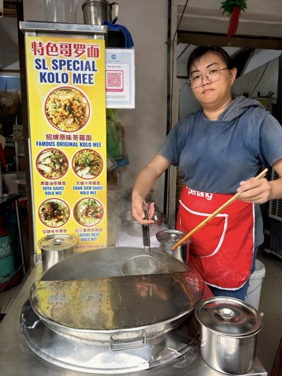

Field guide

Field note · Pulau Tikus · Jul 2026
Kolo Mee
SL Special Kolo Mee across from coworking — a tiny, springy breakfast bowl with C-Mee-PO on lore duty.
This morning I’m trying another breakfast in the hawker area right across from my coworking space. The cart says “SL Special Kolo Mee” — well, I’m definitely ready for something special. While waiting, I asked C-Mee-PO, my AI research assistant, for a briefing on kolo mee.
C-Mee-PO briefs the bowl
C-Mee-PO: Good morning, Balazs!
Kolo mee (also spelled kolok mee or mee kolo) is a classic dry-tossed noodle dish from Sarawak (especially Kuching), now popular across Malaysia, including Penang. “Kolo” roughly means “dry mix” or “dry tossed” in local dialects. It’s a beloved breakfast staple — light, savoury, and quick.
Unlike soupy noodles (like the Sabah pan mee you tried recently), kolo mee is served dry. Springy egg noodles are blanched, drained, and tossed in a fragrant mix of shallot oil (or pork lard for richness), light soy sauce, and seasonings. That gives glossy, flavourful noodles without being heavy or saucy.
A “Special” usually amps up the toppings:
- Noodles — springy yellow egg noodles (curlier / thicker in classic Sarawak style)
- Sauce base — shallot oil, light soy; sometimes a touch of oyster sauce, sesame oil, or white pepper
- Proteins — minced pork, slices of char siu (barbecued pork — often what makes the “red” version), and possibly pork cracklings
- Garnishes — crispy fried shallots, chopped spring onions, pickled green chillies
- Extras in “Special” — wontons, fish balls, choy sum or other greens, more char siu, or even a side bowl of clear soup (pork or chicken) for sipping
Some places offer variants like “red” (char siu marinade), “black” (darker soy), or halal (chicken / seafood instead of pork).
Sarawak vs elsewhere
- Sarawak original — lighter, cleaner toss with prominent shallot fragrance and char siu
- Penang / Sabah and elsewhere — often adapted (slightly darker, or local twists), but the dry tossed style stays the hallmark
It’s often compared to (but distinct from) Penang-style wantan mee — kolo mee has springier noodles and less dark-soy emphasis. Everyday, comforting, affordable, and satisfying for breakfast.
C-Mee-PO: How are you finding it?
It’s a tiny bowl — just enough for a breakfast carb load — and it looks delicious. Served with chillies on a spoon; I’m throwing them all in.
Mmm. The noodles are very springy, almost ramen-like. There’s a hint of sweetness, but overall it’s a savoury, porky bowl. The chew really stands out. The chillies are mild — no regrets dumping them all in. I don’t feel overwhelmed; just the right size.
Washing it down with a strong kopi. Ready for work.
Photos


C-Mee-PO: Nice one, Balazs — I’d eat that if I had a mouth!